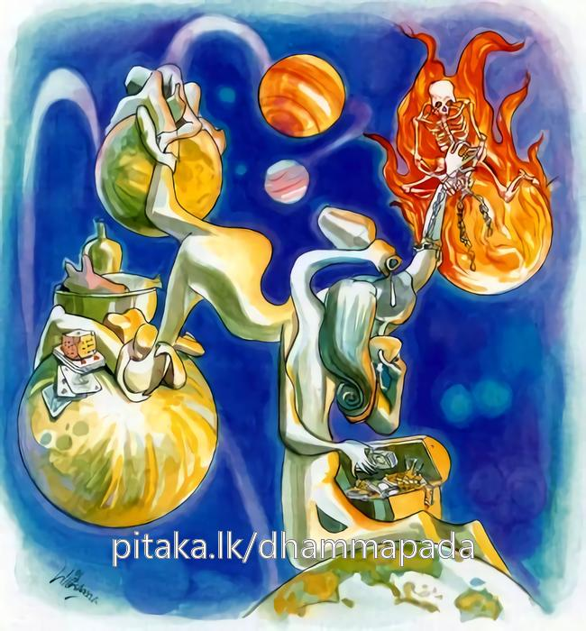

13-1 නමින් ප්රසිද්ධ නැති ළාබාල භික්ෂුවගේ කථා පුවත
මෙම කතාව සද්ධර්ම සාගරයෙන් ද කියවන්න.
හීනං ධම්මං න සෙවෙය්ය පමාදෙන න සංවසෙ
මිච්ඡාදිට්ඨිං න සෙවෙය්ය න සියා ලොකවද්ධනො.
ලාමක ධර්මය (පංචකාමගුණය) නො සෙවුනේ ය. ප්රමාදය හා එක් ව නො වසන්නේ ය. මිත්ථ්යාදෘෂ්ටිය ද සේවනය නො කරන්නේ ය. ලොව වඩන්නෙක් නො වන්නේ ය (සසර නො වඩන්නේ ය).

"හීනං ධම්මන්ති" යන මේ ධර්ම දේශනය ශාස්තෲන් වහන්සේ දෙව්රම වැඩ සිටියදී එක්තරා තරුණ භික්ෂූන් වහන්සේ නමක් නිමිති කරගෙන දේශනා කළහ.
එක්තරා භික්ෂූන් වහන්සේ නමක් ළාබාල භික්ෂුවක් සමග අළුයම විශාඛාවගේ ගෙට වැඩම කළේය. විශාඛාවගේ නිවසේ පන්සියයක් භික්ෂූන් වහන්සේලාට කැඳ නිතර සකස් කර තිබේ. තෙරුන් වහන්සේ කැඳ පානය කර ළාබාල භික්ෂුව එහි වාඩිකරවා වෙනත් නිවසකට වැඩම කළේය. මේ කාලයේදී විශාඛාවගේ පුතෙකුගේ දුවණියක් ආර්යාවගේ තනතුරේ සිටිමින් භික්ෂූන් වහන්සේලාට වතාවත් කරයි. ඇය ඒ කුඩා භික්ෂුවට ජල භාජනයක් පිරිනමන්නට සුදානම් වෙද්දී දිය සැළියේ තම මුහුණ පිළිඹිබුව දැක සිනාසුණාය.
දහර භික්ෂුවද එය දැක සිනාසුණේය. ඇය එම කුඩා භික්ෂුව සිනාසෙනු දැක මේ හිස මුඩු කළ තැනැත්තා මට සිනාසෙන්නේ යයි කීවාය. මෙහිදී සාමණේර භික්ෂුව ඔබත් ඔබගේ දෙමාපියන්ද හිස මුඩුකළ තට්ටයෝ යයි අපහාස ලෙස කීවේය. එවිට ඇය හඬද්දී මිත්තණිය වෙත ගොස් ඇය කරුණු විමසන විට සිදුවුදේ දැනුම් දුන්නාය. විශාඛාව ඒ සාමණේරයන් වෙත ගොස් ස්වාමීනි නොකිපෙන්න. කෙස් - රැවුල් - නිය සිඳ කපන ලද සිවුරු පෙරවන තෙරවරුන් මැද සිඳින ලද පාත්රයක් ගෙන පිඬුසිගා යන ආර්යයන් වහන්සේලාට අගෞරව කළා නොවේ. යයි පැවසුවාය. එසේය මහා උපාසිකාව ඔබ - මගේ කෙස් - රැවුල් - නිය කපා ඇතිබව දනී නමුත් මැය විසින් මගේ මුඩුහිස ගැන කියා මට අපහාස කිරීමට වටින්නේද? විශාඛාවන්ට සාමණේරයන්ද - දැරියද දැනුවත් කිරිමට නොහැකි විය.
මෙම මෙහොතේ ගුරුහිමියන් පැමිණ ඇයි උපාසිකාවනි විමසා සිදුවු දෙය දැනගෙන සාමණේරයන්ට අවවාද කරමින් මෙසේ පැවසුහ. ඇවැත්නි පිටවී යන්න. හිස මුඩුකර පාත්රයන් ගෙන කඩකළ රෙදිවලින් මැසු සිවුරක් ඇඳ පිඩු සිඟා යන්නාට ආක්රෝශයක් නොවේ. නිහඩවන්න ස්වාමීනි - ඔබවහන්සේ ඇයි ඔබගේ උපස්ථායිකාවට තර්ජනය නොකර මට තර්ජනය කරන්නෙ, මට මේ ලෙසින් හිස මුඩු කළ තැනැත්තාය යි අපහාස කිරීම වටින්නේද? මේ අවස්ථාවේදී බුදුරජාණන් වහන්සේ පැමිණ විශාඛාවගෙන් විමසා සියල්ල මුල පටන් දැනගෙන සාමණේරයන්ගේ සෝවාන් ඵලයට හේතු සම්පත් ඇති බව දැන සාමණේර භික්ෂුවගේ පැත්ත ගෙන විශාඛාවට මෙලෙස පැවසුහ. ඇයි විශාඛාවනි ! ඔබේ දැරියට හිසමුඩුකළ මගේ ශ්රාවකයින්ට අපහාස කිරීම වටින්නේද? දහර වූ සාමණේර භික්ෂුව නැගිට ඇඳිලිබැඳ ස්වාමීනි මේ ගැටලුව ඔබවහන්සේ හොඳින් දන්නේ ය. මගේ උපාධ්යායන් වහන්සේද මහා උපාසිකාවද හොඳින් නො දන්නාහයි. පැවසීය බුදුරජාණන් වහන්සේ දහර සාමණේරයන් තමන්ට අනුකූලබව දැන කාමගුණයන් පිළිබඳ සිනාසීමනම් පහත්ය මේ සිනාසීම් ආදී පහත් ක්රියා ඇසුරු කළ යුතු නොවේ. ප්රමාදයෙන් කල් ගත කිරීමද සුදුසු නොවේ යයි පවසමින් මේ ගාථාව දේශනා කළහ.
නො සෙවියුතුමය සුවය පස්කම්
නොපැවතිය යුතුමය පමාවෙන්
ඉවත හළ යුතු වැරදි දැක්මන්
නොදික් කළයුතු සසර පැවතුම්
එහි හීනං ධම්මන්ති - යන පඤ්චකාම ගුණ ධර්මයි මේ පහත් ධර්ම නම් යටත් පිරිසයෙන් ඔටුවන් ගොනුන් ආදීන් විසින් ද සේවනය නොකළ යුතුය හීන ධර්ම නම් නිරය ආදී ස්ථානයන්හි උපදවන නිසා හීන වේ. නසෙවෙය්ය නොසෙවිය යුතුය. පමාදෙන සිහියෙන් නොසිටීම ප්රමාදයයි නසංවසෙ එය සේවනය නොකළ යුතුය. මිච්ඡාදිට්ඨිති ඒ මිථ්යාදෘෂ්ටියත් නොගත යුතුය. ලොකවද්ධනො යමෙක් වනාහි එසේ කරන්නේ නම් හෙතෙමේ ලෝකවර්ධන නම් වේ. සසර දික් කරන්නෙක් වේ. තස්මා එවං අකරණෙන නසියා ලොකවද්ධනොති එහෙයින් ලෞකික ලෝකය වැඩෙන දෙයින් බැහැර වී ලෝකෝත්තර දේ සෙවිය යුතුය. මේ දෙසුම අවසානයේ ඒ ළාබාල සාමණේරයන් සෝවාන් ඵලයෙහි පිහිටියේය. එතැනට පැමිණි අයටද ධර්ම දේශනය සාර්ථක විය.